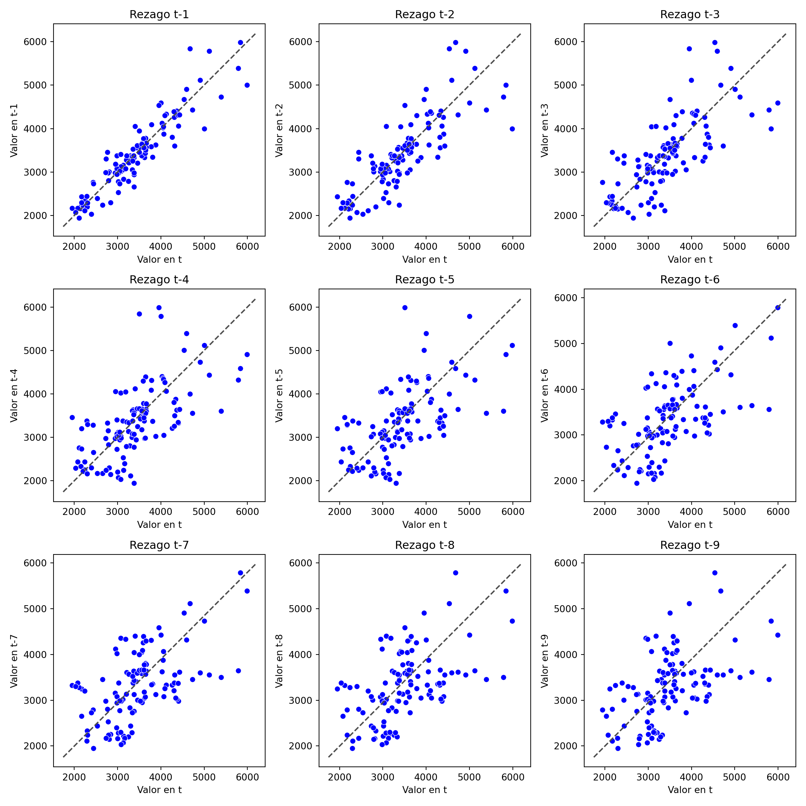

3 Modulo 1
3.1 Unidad 1: Motivacion
3.1.1 Historico de precios del Maracuya
import pandas as pd
import numpy as np
import matplotlib.pyplot as plt
df_precios_historicos = pd.read_excel("historico_precios_maracuya.xlsx", sheet_name="Hoja1")
df_precios_passion = pd.read_excel("INFORME_PRODUCCION.xlsx", sheet_name="TOTALIZADO")
df_precios_datos = pd.read_excel("historico_precios_maracuya.xlsx", sheet_name="Hoja3")
print(df_precios_historicos.head())## fecha precio_cali_cavasa ... precio_tulua prom_valle
## 0 2021-01-08 2308.0 ... 2250.0 2334.666667
## 1 2021-01-15 2092.0 ... 2183.0 2252.166667
## 2 2021-01-22 2083.0 ... 2033.0 2216.500000
## 3 2021-01-29 2017.0 ... 1800.0 2162.500000
## 4 2021-02-05 2071.0 ... 1967.0 2150.833333
##
## [5 rows x 8 columns]print(df_precios_passion.head())## FECHA FACTURA NO. ... VR TOTAL LOTE
## 0 2021-08-04 No. 001 CORRIENTE ... 95600.0 LIBANO No.1
## 1 2021-08-04 No. 001 INDUSTRIAL ... 72000.0 LIBANO No.1
## 2 2021-08-06 No. 002 CORRIENTE ... 148580.0 LIBANO No.1
## 3 2021-08-06 No. 002 INDUSTRIAL ... 8736.0 LIBANO No.1
## 4 2021-08-09 No. 003 CORRIENTE ... 285470.0 LIBANO No.1
##
## [5 rows x 6 columns]print(df_precios_datos.head())## Unnamed: 0 ene feb ... oct nov dic
## 0 2021 2241.458333 2223.291667 ... 3082.566667 2925.222222 3017.466667
## 1 2022 3052.791667 3472.583333 ... 3954.208333 3652.625000 3613.800000
## 2 2023 3540.625000 4270.916667 ... NaN NaN NaN
##
## [3 rows x 13 columns]print(df_precios_historicos.info())## <class 'pandas.core.frame.DataFrame'>
## RangeIndex: 123 entries, 0 to 122
## Data columns (total 8 columns):
## # Column Non-Null Count Dtype
## --- ------ -------------- -----
## 0 fecha 123 non-null datetime64[ns]
## 1 precio_cali_cavasa 122 non-null float64
## 2 precio_cali_s.elena 123 non-null int64
## 3 precio_cartago 118 non-null float64
## 4 precio_btura 118 non-null float64
## 5 precio_palmira 119 non-null float64
## 6 precio_tulua 120 non-null float64
## 7 prom_valle 123 non-null float64
## dtypes: datetime64[ns](1), float64(6), int64(1)
## memory usage: 7.8 KB
## Noneprint(df_precios_passion.info())## <class 'pandas.core.frame.DataFrame'>
## RangeIndex: 2156 entries, 0 to 2155
## Data columns (total 6 columns):
## # Column Non-Null Count Dtype
## --- ------ -------------- -----
## 0 FECHA 2156 non-null datetime64[ns]
## 1 FACTURA NO. 2156 non-null object
## 2 CANTIDAD KILOS 2156 non-null float64
## 3 VALOR KILO 2156 non-null float64
## 4 VR TOTAL 2156 non-null float64
## 5 LOTE 2156 non-null object
## dtypes: datetime64[ns](1), float64(3), object(2)
## memory usage: 101.2+ KB
## Noneprint(df_precios_historicos.shape)## (123, 8)print(df_precios_passion.shape)## (2156, 6)print(df_precios_historicos["prom_valle"].describe())## count 123.000000
## mean 3399.417344
## std 830.841951
## min 1946.666667
## 25% 2963.416667
## 50% 3358.666667
## 75% 3778.250000
## max 5989.000000
## Name: prom_valle, dtype: float64print(df_precios_passion["VALOR KILO"].describe())## count 2156.000000
## mean 2900.891430
## std 751.650055
## min 800.000000
## 25% 2400.000000
## 50% 2800.000000
## 75% 3400.000000
## max 5600.000000
## Name: VALOR KILO, dtype: float64# Calcular media por fecha
df_precios_passion_mean = df_precios_passion.set_index('FECHA')
df_precios_media = df_precios_passion_mean.groupby(pd.Grouper(freq='M')).mean()
# Graficar datos y línea de tendencia
df_precios_passion.plot(x="FECHA", y="VALOR KILO")
df_precios_media.plot(y="VALOR KILO", ax=plt.gca(), color='red')
plt.show()
3.2 Unidad 2: Estructura de los datos
3.2.1 Estructura de los datos en series de tiempo (precios Valle)
3.2.1.1 Medias Moviles
import seaborn as sns
from statsmodels.tsa.seasonal import seasonal_decompose
import statsmodels.api as sm
from statsmodels.graphics.tsaplots import plot_acf
# Eliminar valores faltantes
df_precios_historicos.fillna(df_precios_historicos.mean(), inplace=True)
# Calcular promedio móvil## <string>:1: FutureWarning: DataFrame.mean and DataFrame.median with numeric_only=None will include datetime64 and datetime64tz columns in a future version.df_precios_historicos['promedio_movil'] = df_precios_historicos['prom_valle'].rolling(window=3).mean()
# Gráfico de la serie de tiempo con el promedio móvil
fig, ax = plt.subplots(figsize=(10, 6))
sns.lineplot(data=df_precios_historicos, x='fecha', y='prom_valle', color='blue', ax=ax)
sns.lineplot(data=df_precios_historicos, x='fecha', y='promedio_movil', color='red', ax=ax)
ax.set(title='Precio promedio de la Maracuya', xlabel='Fecha', ylabel='Precio promedio')
plt.show()
3.2.1.2 Rezago y Estacionalidad
import seaborn as sns
# Crear una figura con subplots de 3 por 3
fig, axes = plt.subplots(nrows=3, ncols=3, figsize=(12, 12))
# Realizar un bucle para crear una gráfica separada para cada rezago
for i in range(1, 10):
# Calcular las coordenadas del subplot actual
row = (i - 1) // 3
col = (i - 1) % 3
# Obtener el eje correspondiente al subplot actual
ax = axes[row, col]
# Graficar el scatterplot del rezago actual
sns.scatterplot(data=df_precios_historicos, x='prom_valle', y=df_precios_historicos['prom_valle'].shift(i), color='blue', ax=ax)
# Agregar línea diagonal
ax.plot(ax.get_xlim(), ax.get_ylim(), ls="--", c=".3")
# Configurar título y etiquetas de los ejes
ax.set(title=f'Rezago t-{i}', xlabel='Valor en t', ylabel=f'Valor en t-{i}')
# Ajustar los subplots
plt.tight_layout()
# Mostrar la gráfica
plt.show()
# Obtener la serie de tiempo
serie = df_precios_historicos['prom_valle']
# Gráfico de autocorrelación
fig, ax = plt.subplots(figsize=(10, 6))
plot_acf(serie, ax=ax, lags=50)
plt.show()3.2.2 Estructura de los datos en series de tiempo (precios Passion)
3.2.2.1 Medias Moviles
import seaborn as sns
from statsmodels.tsa.seasonal import seasonal_decompose
import statsmodels.api as sm
from statsmodels.graphics.tsaplots import plot_acf
# Eliminar valores faltantes
df_precios_passion.fillna(df_precios_passion.mean(), inplace=True)
# Calcular promedio móvil## <string>:1: FutureWarning: DataFrame.mean and DataFrame.median with numeric_only=None will include datetime64 and datetime64tz columns in a future version.
## <string>:1: FutureWarning: Dropping of nuisance columns in DataFrame reductions (with 'numeric_only=None') is deprecated; in a future version this will raise TypeError. Select only valid columns before calling the reduction.df_precios_passion['promedio_movil'] = df_precios_passion['VALOR KILO'].rolling(window=3).mean()
# Gráfico de la serie de tiempo con el promedio móvil
fig, ax = plt.subplots(figsize=(10, 6))
sns.lineplot(data=df_precios_passion, x='FECHA', y='VALOR KILO', color='blue', ax=ax)
sns.lineplot(data=df_precios_passion, x='FECHA', y='promedio_movil', color='red', ax=ax)
ax.set(title='Precio promedio de la Maracuya', xlabel='Fecha', ylabel='Precio promedio')
plt.show()3.2.2.2 Rezago y Estacionalidad
import seaborn as sns
# Crear una figura con subplots de 3 por 3
fig, axes = plt.subplots(nrows=3, ncols=3, figsize=(12, 12))
# Realizar un bucle para crear una gráfica separada para cada rezago
for i in range(1, 10):
# Calcular las coordenadas del subplot actual
row = (i - 1) // 3
col = (i - 1) % 3
# Obtener el eje correspondiente al subplot actual
ax = axes[row, col]
# Graficar el scatterplot del rezago actual
sns.scatterplot(data=df_precios_passion, x='VALOR KILO', y=df_precios_passion['VALOR KILO'].shift(i), color='blue', ax=ax)
# Agregar línea diagonal
ax.plot(ax.get_xlim(), ax.get_ylim(), ls="--", c=".3")
# Configurar título y etiquetas de los ejes
ax.set(title=f'Rezago t-{i}', xlabel='Valor en t', ylabel=f'Valor en t-{i}')
# Ajustar los subplots
plt.tight_layout()
# Mostrar la gráfica
plt.show()# Obtener la serie de tiempo
serie = df_precios_passion['VALOR KILO']
# Gráfico de autocorrelación
fig, ax = plt.subplots(figsize=(10, 6))
plot_acf(serie, ax=ax, lags=50)
plt.show()
3.3 Unidad 3: Preprocesamiento y Visualización
3.3.1 Preprocesamiento y visualización
3.3.1.1 Descomposicion
import pandas as pd
import matplotlib.pyplot as plt
from statsmodels.tsa.seasonal import seasonal_decompose
from statsmodels.tsa.stattools import adfuller
# Cargar los datos de la serie de tiempo en un DataFrame de pandas
df_precios_historicos = pd.read_excel("historico_precios_maracuya.xlsx", sheet_name="Hoja1")
# Convertir la columna 'fecha' a tipo datetime
df_precios_historicos['fecha'] = pd.to_datetime(df_precios_historicos['fecha'], format='%Y-%m-%d')
# Establecer la columna 'fecha' como el índice del DataFrame
df_precios_historicos.set_index('fecha', inplace=True)
# Calcular el promedio mensual de los precios
df_precios_mensuales = df_precios_historicos.resample('M').mean()
# Convertir el DataFrame a un objeto de series de tiempo
data = pd.Series(df_precios_mensuales['prom_valle'].values, index=df_precios_mensuales.index)
# Hacer la descomposición
decomposition = seasonal_decompose(data)
# Mostrar las componentes
fig, axes = plt.subplots(nrows=4, ncols=1, figsize=(8, 10), sharex=True)
axes[0].set(title='Serie de tiempo original')
data.plot(ax=axes[0])
axes[1].set(title='Tendencia')
decomposition.trend.plot(ax=axes[1])
axes[2].set(title='Estacionalidad')
decomposition.seasonal.plot(ax=axes[2])
axes[3].set(title='Residuos')
decomposition.resid.plot(ax=axes[3])
plt.show()
# Realizar el test de Dickey-Fuller en los residuosresult = adfuller(decomposition.resid.dropna())
print("ADF Statistic:", result[0])## ADF Statistic: -4.414089293690155print("p-value:", result[1])## p-value: 0.00028024630721353635ADF Statistic: El valor de -4.41408929369015 es el estadístico ADF obtenido en la prueba. Este valor negativo indica que la serie de tiempo tiene una tendencia decreciente.
p-value: El valor de 0.0002802463072135418 es el valor p asociado al estadístico ADF. El valor p es utilizado para tomar una decisión sobre la hipótesis nula. En este caso, como el valor p es menor que un nivel de significancia comúnmente utilizado (0.05), se rechaza la hipótesis nula de que la serie de tiempo tiene una raíz unitaria (es no estacionaria). Esto sugiere que la serie de tiempo es estacionaria.
En resumen, los resultados indican que la serie de tiempo analizada parece ser estacionaria, lo cual es un requisito importante para aplicar algunos modelos de análisis de series de tiempo.
3.3.1.2 Conclusiones de la Estacionariedad
Descomposición de la serie de tiempo: revela patrones interesantes en sus componentes. A continuación, se presenta una descripción de cada uno de ellos:
Tendencia: Visualmente, se observa una tendencia creciente en la serie de tiempo desde julio de 2021 hasta noviembre de 2022. Esto sugiere que los valores de la serie han experimentado un aumento constante durante ese período.
Estacionalidad: La serie muestra patrones estacionales distintivos. Específicamente, se observan picos altos en los meses de febrero y marzo, mientras que los meses de mayo y agosto muestran picos bajos. Estos patrones sugieren una estacionalidad regular en la serie, con fluctuaciones consistentes en esos meses específicos cada año.
Residuos: Al examinar los residuos de la descomposición, se destacan algunos hallazgos interesantes. Se observa un mínimo en septiembre de 2021 y un máximo en septiembre de 2022 en los residuos. Esto indica que hay periodos en los que los valores de la serie se desvían significativamente de la tendencia y la estacionalidad esperadas. Además, entre diciembre de 2021 y junio de 2022, los residuos muestran una línea continua, lo cual sugiere una menor variabilidad o presencia de estructuras sistemáticas en ese intervalo de tiempo.
En resumen, la descomposición revela una tendencia creciente en la serie de tiempo, estacionalidades distintivas en ciertos meses y patrones interesantes en los residuos. Estos hallazgos respaldan la presencia de componentes estructurales en los datos y pueden ser útiles para comprender mejor el comportamiento de la serie a lo largo del tiempo.
El estadístico ADF obtenido en la prueba es de -4.41408929369015. Un valor negativo para este estadístico indica la presencia de una tendencia decreciente en la serie de tiempo. Por otro lado, el valor p asociado al estadístico ADF es de 0.0002802463072135418. El valor p se utiliza para evaluar la hipótesis nula de que la serie de tiempo tiene una raíz unitaria, lo que indica no estacionariedad. En este caso, como el valor p es menor que el nivel de significancia comúnmente utilizado (0.05), se rechaza la hipótesis nula, lo que sugiere que la serie de tiempo es estacionaria.
En resumen, los resultados indican que la serie de tiempo analizada parece exhibir estacionariedad, lo cual es un requisito importante para aplicar diversos modelos de análisis de series de tiempo.